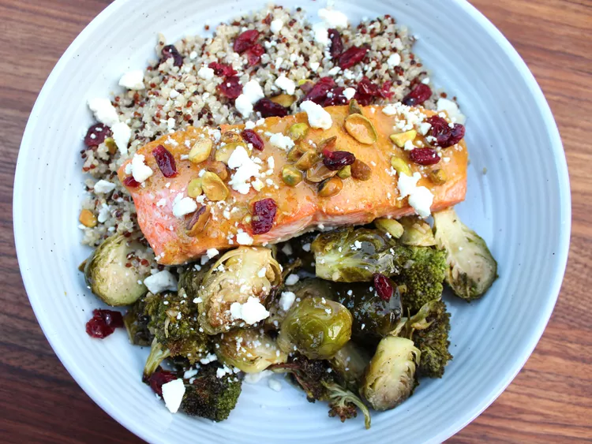

Harvest Salmon Bowls

Description
For these salmon harvest bowls, broccoli and Brussels sprouts are roasted on a sheet pan with salmon, then served
in a bowl with quinoa, feta, cranberries, and pistachios, a perfect bowl of fall flavors.
Ingredients
- 4 (6 ounce) salmon filets
- 3 tablespoons spicy brown mustard
- 1 ½ tablespoons honey
- ½ tablespoon lemon juice
- ½ cup olive oil
- ¼ cup maple syrup
- 1 tablespoon apple cider vinegar
- 6 cloves garlic, minced
- ¼ teaspoon salt
- ½ teaspoon freshly ground black pepper
- 1 head broccoli, separated into florets
- 16 ounces Brussels sprouts, halved
- 4 cups cooked quinoa
- 4 ounces feta cheese, crumbled
- ½ cup dried cranberries
- ⅓ cup chopped pistachios
Steps:
- Preheat the oven to 400 degrees F (200 degrees C). Line a baking sheet with parchment paper.
- In a small bowl combine mustard, honey, and lemon juice; set aside.
- Combine olive oil, maple syrup, apple cider vinegar, garlic, salt, and pepper in a large bowl. Add in
broccoli and Brussels sprouts; toss until coated. Spread evenly onto the prepared sheet pan.
- Roast in the preheated oven for 20 minutes. Remove pan from oven, toss vegetables, and spread out again.
Place salmon filets onto sheet pan with vegetables, skin side down. Brush salmon with mustard mixture
- Return to the oven; roast until fish flakes easily with a fork, 12 to 15 minutes.
- Place 1 cup quinoa and a salmon filet in each serving bowl. Evenly divide vegetables into bowls and top with
feta cheese, cranberries, and pistachios.